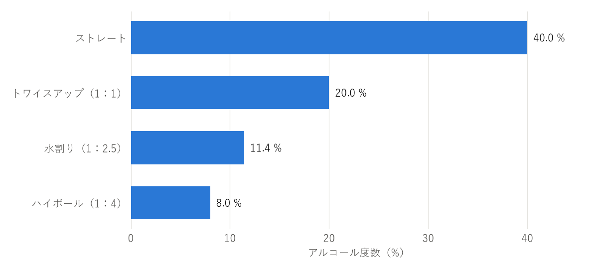

8. 飲み方
ウイスキーは、飲み方によって香りの立ち方や味わいの印象が大きく変わる。決まった正解はないので、銘柄や気分、場面に合わせて選べばよい。本章では、主な飲み方とカクテルを紹介する。
8.1. 主な飲み方
主な飲み方の作り方と特徴を表 8.1にまとめる。
飲み方 |
作り方 |
特徴 |
|---|---|---|
ストレート |
氷や水を加えず、常温のままグラスに注ぐ。ニートとも呼ぶ。 |
ウイスキー本来の香りと味わいを最もよく感じられる。アルコール度数が高いので、チェイサー（水）を用意し、少量ずつ飲む。 |
トワイスアップ |
ウイスキーと常温の水を 1：1 で合わせる。 |
アルコールの刺激が和らぎ、香りが開きやすい。ブレンダーが原酒の香りを確かめるときにも使う方法である。 |
オン・ザ・ロック |
ロックグラスに大きな氷を入れ、ウイスキーを注ぐ。 |
冷たくすっきりした味わい。氷が溶けるにつれて、味わいが変わっていくのを楽しめる。 |
ハーフロック |
氷を入れたグラスに、ウイスキーと水を 1：1 で注ぐ。 |
オン・ザ・ロックより飲みやすく、水割りより香りや味わいがしっかり残る。 |
水割り |
氷を入れたグラスに、ウイスキーと水を 1：2〜2.5 で注ぐ。 |
食事に合わせやすい、日本で広く親しまれている飲み方。 |
ハイボール |
氷を入れたグラスに、ウイスキーと炭酸水を 1：3〜4 で注ぐ。 |
爽快で飲みやすい。食事との相性がよい。 |
お湯割り |
ウイスキーとお湯を 1：2〜3 で合わせる。 |
香りが立ち、体が温まる。寒い季節に向く。 |
ミスト |
グラスに細かく砕いた氷を詰め、ウイスキーを注ぐ。レモンの皮をしぼって香りを付けることもある。 |
グラスの表面が霧（ミスト）のように曇ることが名前の由来。キリッと冷えた味わいになる。 |
初めての人は、アルコール度数が低く飲みやすいハイボールや水割りから始めるとよい。慣れてきたら、トワイスアップやストレートで、銘柄ごとの香りの違いを楽しむとよい。
8.2. おいしく作るコツ
8.2.1. ハイボール
グラスに氷をいっぱいに入れ、マドラーで混ぜてグラスを冷やす。溶けた水は捨てる。
ウイスキーを注ぎ、よく混ぜて冷やす。
よく冷えた炭酸水を、氷に当てないように静かに注ぐ。
マドラーで縦に 1 回だけ軽く混ぜる。混ぜすぎると炭酸が抜ける。
好みでレモンの皮をしぼったり、黒こしょうを振ったりしてもよい。
8.2.2. 水割り
グラスに氷をいっぱいに入れ、ウイスキーを注ぐ。
マドラーでよく混ぜ、ウイスキーを冷やす。
氷を足し、冷えた水を注ぐ。
もう一度軽く混ぜる。
水は、ミネラル分の少ない軟水を使うと、ウイスキーの香りを邪魔しにくい。
8.2.3. お湯割り
先にお湯をグラスに入れ、後からウイスキーを注ぐ。こうすると対流で自然に混ざり、香りも立ちやすい。お湯は、沸騰したものを少し冷ました 70〜80 ℃ 程度がよい。熱すぎるとアルコールの刺激が強く感じられる。
8.3. 飲み方とアルコール度数
水や炭酸水で割ったときのアルコール度数は、次の式で計算できる。
ここで、\(p\)は割った後のアルコール度数（%）、\(V_w\)はウイスキーの量（ml）、\(a\)はウイスキーのアルコール度数（%）、\(V_m\)は割り材の量（ml）である。
たとえば、アルコール度数 40 % のウイスキー 30 ml を炭酸水 120 ml で割ると、アルコール度数は次のようになる。
つまり、アルコール度数 8 % 程度のハイボールになる。実際には、溶けた氷の水も加わるため、これより少し低くなる。アルコール度数 40 % のウイスキーを主な飲み方で割ったときの目安を図 8.1に示す。

図 8.1 飲み方ごとのアルコール度数の目安（アルコール度数 40 % のウイスキーの場合、氷が溶けた分は含まない）
ハイボール（8〜10 % 程度）は、ビール（5 % 程度）よりアルコール度数が高い。水割り（11〜13 % 程度）は、ワイン（12 % 程度）とほぼ同じである。飲みやすいからといって飲み過ぎないよう注意する。
8.4. ウイスキーを使ったカクテル
ウイスキーは、カクテルのベースとしても広く使われる。代表的なカクテルを表 8.2に示す。分量は一般的な例であり、店やレシピによって異なる。
カクテル |
材料と作り方（例） |
特徴 |
|---|---|---|
マンハッタン |
ライウイスキーまたはバーボン 45 ml、スイートベルモット 15 ml、アンゴスチュラ・ビターズ 1 ふりを氷と混ぜて冷やし、カクテルグラスに注ぐ。チェリーを飾る。 |
「カクテルの女王」と呼ばれる。甘く香り高い。 |
オールドファッションド |
ロックグラスに角砂糖 1 個とビターズを入れて潰し、氷とバーボンまたはライウイスキー 45 ml を加える。オレンジの皮などを添える。 |
最も古いカクテルの 1 つとされる。砂糖を崩しながら甘さを調節して飲む。 |
ミントジュレップ |
グラスでミントの葉と砂糖を軽く潰し、細かく砕いた氷とバーボン 60 ml を加えて混ぜる。 |
アメリカの競馬、ケンタッキーダービーの公式ドリンクとして知られる。爽やかな味わい。 |
ウイスキーサワー |
ウイスキー 45 ml、レモン果汁 20 ml、砂糖 1 さじをシェークし、グラスに注ぐ。 |
甘酸っぱく飲みやすい。 |
ゴッドファーザー |
氷を入れたロックグラスに、スコッチ 45 ml とアマレット（杏仁の香りのリキュール）15 ml を注いで混ぜる。 |
甘く香ばしい香り。食後に向く。 |
ラスティネール |
氷を入れたロックグラスに、スコッチ 45 ml とドランブイ（スコッチを使ったハーブと蜂蜜のリキュール）15 ml を注いで混ぜる。 |
甘く濃厚な味わい。食後に向く。 |
アイリッシュコーヒー |
温めたグラスに砂糖と熱いコーヒーを入れ、アイリッシュウイスキー 30 ml を加える。軽く泡立てた生クリームを浮かべる。 |
温かく、コーヒーとウイスキーの香りが合う。寒い季節に向く。 |